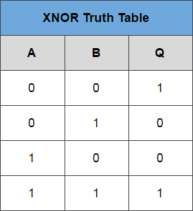
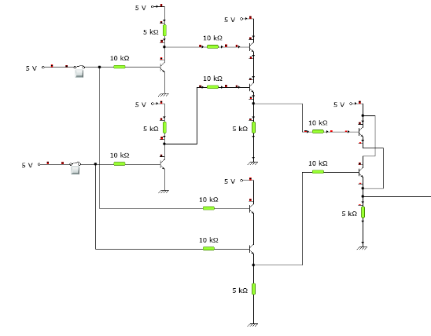

AND, OR, NOT, NAND, NOR, Ex-OR, Ex-NOR गेट्स के लिए ट्रुथ टेबल का सत्यापन और व्याख्या।
परिचय
लॉजिक गेट्स किसी भी डिजिटल सिस्टम के बुनियादी बिल्डिंग ब्लॉक हैं। लॉजिक गेट्स इलेक्ट्रॉनिक सर्किट्स हैं जिनमें एक या एक से अधिक इनपुट और केवल एक आउटपुट होता है। इनपुट और आउटपुट के बीच संबंध एक निश्चित लॉजिक पर आधारित है। इसी के आधार पर लॉजिक गेट्स के नाम इस प्रकार होतें हैं
- AND गेट
- OR गेट
- NOT गेट
- NAND गेट
- NOR गेट
- EX-OR गेट
- EX-NOR गेट
1) AND गेट
AND गेट एक इलेक्ट्रॉनिक सर्किट है जो एक हाई आउटपुट (1) देता है केवल अगर इसके सभी इनपुट्स हाई हैं। एक डॉट (.) AND ऑपरेशन दिखाने के लिए इस्तेमाल किया जाता है यानी A.B. या AB के रूप में लिखा जा सकता है
चित्र-1: AND गेट का लॉजिक सिंबॉल

चित्र-2: AND गेट की ट्रुथ टेबल

चित्र-3: आरटीएल लॉजिक के माध्यम से AND गेट
2) OR गेट
OR गेट एक इलेक्ट्रॉनिक सर्किट है जो एक हाई आउटपुट (1) देता है यदि इसके एक या अधिक इनपुट्स हाई हैं। OR ऑपरेशन दिखाने के लिए एक प्लस (+) का उपयोग किया जाता है।

चित्र-4: OR गेट का लॉजिक सिंबॉल

चित्र-5: OR गेट की ट्रुथ टेबल
OR गेट को डीआरएल (डायोड-रेजिस्टेंस-लॉजिक) या टीटीएल (ट्रांजिस्टर-ट्रांजिस्टर-लॉजिक) द्वारा प्राप्त किया जा सकता है। वर्तमान में, हम सीखेंगे कि डीआरएल (डायोड-रेसिस्टेंस-लॉजिक) का उपयोग करके OR गेट को कैसे लागू किया जाए। OR गेट प्राप्त करने के लिए, हम OR गेट के हर इनपुट पर एक डायोड का उपयोग करेंगे। डायोड का एनोड भाग इनपुट से जुड़ा होता है जबकि कैथोड भाग एक साथ जुड़ा होता है और एक कैथोड से जुड़ा रेसिस्टर ग्राउंडेड होता है। इस मामले में, हमने दो इनपुट्स लिए हैं जो नीचे सर्किट में देखे जा सकते हैं।
जब दोनों इनपुट्स लॉजिक 0 या लो स्थिति में होते हैं तो डायोड्स डी 1 और डी 2 रिवर्स बायस्ड हो जाते हैं। चूंकि डायोड का एनोड टर्मिनल कैथोड टर्मिनल की तुलना में लो वोल्टेज स्तर पर है, इसलिए डायोड ओपन सर्किट के रूप में कार्य करेगा, इसलिए रेसिस्टर में कोई वोल्टेज नहीं है और इसलिए आउटपुट वोल्टेज जमीन के समान है। जब दोनों में से कोई भी डायोड लॉजिक 1 या हाई स्टेट में होता है तो उस इनपुट के अनुरूप डायोड फॉरवर्ड बायस होता है। चूंकि इस समय एनोड कैथोड की तुलना में हाई वोल्टेज पर है इसलिए करंट फॉरवर्ड बायस्ड डायोड के माध्यम से प्रवाहित होगा और यह करंट फिर रेसिस्टर पर दिखाई देता है जिससे आउटपुट टर्मिनल पर भी हाई वोल्टेज होता है। इसलिए आउटपुट में हमें हाई या तर्क 1 या +5V मिलता है। इसलिए, यदि कोई या दोनों इनपुट हाई हैं, तो आउटपुट उच्च या "1" होगा।
चित्र-6: डीआरएल लॉजिक के माध्यम से OR गेट
### 3) NOT गेट
NOT गेट एक इलेक्ट्रॉनिक सर्किट है जो अपने आउटपुट में इनपुट का इन्वर्टेड वर्शन तैयार करता है। इसे इन्वर्टर के नाम से भी जाना जाता है। यदि इनपुट परिवर्ती संख्या A है, तो इन्वर्टेड आउटपुट को NOT A जाना जाता है। इसे A' या A के शीर्ष पर एक बार के साथ दिखाया जाता है, जैसा कि आउटपुट में दिखाया गया है।

चित्र-7: NOT गेट का लॉजिक सिंबॉल

चित्र-8: NOT गेट की ट्रुथ टेबल
ट्रांजिस्टर के माध्यम से NOT गेट को प्राप्त किया जा सकता है। इनपुट रेसिस्टर R2 के माध्यम से ट्रांजिस्टर बेस से जुड़ा होता है। जब इनपुट पर कोई वोल्टेज मौजूद नहीं होता है, तो ट्रांजिस्टर बंद हो जाता है। जब ट्रांजिस्टर बंद हो जाता है, तो कलेक्टर-एमिटर पाथ से कोई करंट प्रवाह नहीं होता है। इस प्रकार, सप्लाई वोल्टेज (VCC) से करंट रेसिस्टर R1 से आउटपुट तक प्रवाहित होता है। इस तरह, सर्किट का आउटपुट हाई होता है जब इसका इनपुट लो होता है।
जब वोल्टेज इनपुट पर मौजूद होता है, तो ट्रांजिस्टर चालू हो जाता है, जिससे करंट सीधे कलेक्टर-एमिटर सर्किट के माध्यम से ग्राउंड तक प्रवाहित होता है। यह ग्राउंड पथ एक शॉर्टकट बनाता है जो आउटपुट को बाईपास करता है, जिससे आउटपुट लो हो जाता है।
इस तरह, इनपुट लो होने पर आउटपुट हाई होता और इनपुट हाई होने पर लो।
चित्र-9:ट्रांजिस्टर के माध्यम से NOT गेट
4) NAND गेट
यह एक NOT-AND गेट है जो एक AND गेट के बाद एक NOT गेट के बराबर है। यदि कोई भी इनपुट लो हैं तो सभी NAND गेट्स के आउटपुट हाई होते हैं। AND गेट के साथ आउटपुट पर एक छोटा सर्कल उसका सिंबॉल है। छोटा सर्कल इन्वेर्शन का प्रतिनिधित्व करता है।
चित्र-10: AND गेट का लॉजिक सिंबॉल

चित्र-11: NAND गेट की ट्रुथ टेबल
RTL (रेसिस्टर-ट्रांज़िस्टर-लॉजिक) स्विचेस का उपयोग करके एक सरल 2-इनपुट लॉजिक NAND गेट का निर्माण किया जा सकता है, जिसमें इनपुट्स सीधे ट्रांज़िस्टर बेसेस से जुड़े होते हैं जैसा की नीचे दिखाया गया है। Q में आउटपुट के लिए दोनों ट्रांज़िस्टर्स "cut-off" या "off" होने चाहिए।
चित्र-12: आरटीएल लॉजिक के माध्यम से NAND गेट।
5) NOR गेट
यह एक NOT-OR गेट है जो एक OR गेट के बाद एक NOT गेट के बराबर है। यदि कोई भी इनपुट्स हाई हैं तो सभी NOR गेट्स के आउटपुट्स लो हैं। आउटपुट पर एक छोटे सर्कल के साथ एक OR गेट उसका सिंबॉल है। छोटा सर्कल इन्वर्शन का प्रतिनिधित्व करता है।

चित्र-13: NOR गेट का तर्क प्रतीक

चित्र-14: NOR गेट की ट्रुथ टेबल
RTL (रेसिस्टर-ट्रांज़िस्टर-लॉजिक) स्विचेस का उपयोग करके एक सरल 2-इनपुट लॉजिक NOR गेट का निर्माण किया जा सकता है, जिसमें इनपुट्स सीधे ट्रांज़िस्टर बेसेस से जुड़े होते हैं जैसा की नीचे दिखाया गया है। Q में आउटपुट के लिए दोनों ट्रांज़िस्टर्स "cut-off" या "off" होने चाहिए।
चित्र-15: आरटीएल लॉजिक के माध्यम से NOR गेट।
6) EX-OR गेट
'Exclusive-OR गेट एक सर्किट है जो हाई आउटपुट देगा, अगर इसके दोनों में से एक इनपुट हाई है मगर दोनों इनपुट्स हाई नहीं हैं। EX-OR ऑपरेशन को दिखाने के लिए एक घिरे हुए प्लस साइन (⊕) का उपयोग किया जाता है।

चित्र-16: EX-OR गेट का लॉजिक सिंबॉल

चित्र-17: EX-OR गेट की ट्रुथ टेबल
EX-OR गेट और, NAND और OR गेट्स से बनाया गया है। आउटपुट हाई केवल तब होता है जब दोनों इनपुट्स अलग होते हैं।

चित्र-18: आरटीएल लॉजिक के माध्यम से EX-OR गेट।
7) EX-NOR गेट
Exclusive-NOR गेट सर्किट EX-OR गेट के विपरीत करता है। यह लो आउटपुट देगा अगर इसके दोनों में से एक इनपुट हाई है मगर दोनों इनपुट्स हाई नहीं हैं। आउटपुट पर एक छोटे सर्कल के साथ एक EX-OR गेट उसका सिंबॉल है। छोटा सर्कल इन्वर्शन का प्रतिनिधित्व करता है।
Y= A⊕B

चित्र-19: EX-NOR गेट का लॉजिक सिंबॉल

चित्र-20: EX-NOR गेट की ट्रुथ टेबल
EX-NOR गेट AND, NOT और OR गेट्स से बनाया जाता है। आउटपुट केवल तभी हाई होता है जब दोनों इनपुट्स समान हों।

चित्र-21: आरटीएल लॉजिक के माध्यम से EX-NOR गेट।